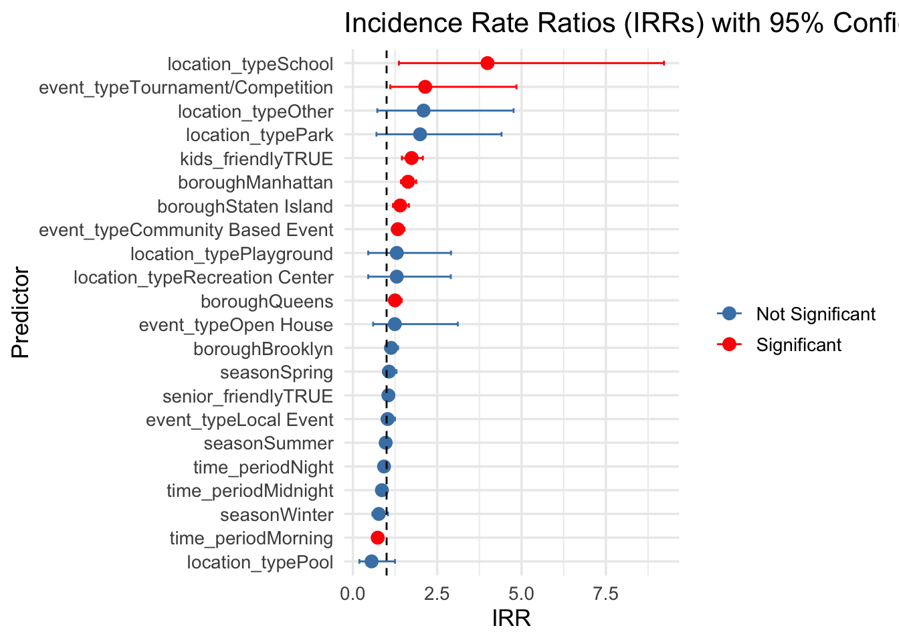

Model
Modeling Workflow Diagram
┌──────────────────────────────────┐
│ Exploratory Data Analysis (EDA) │
│ - Histogram of attendance │
│ - mean–variance check │
│ → Identify skewness & overdispersion
└──────────────────────────────────┘
│
▼
┌───────────────────────────────────────────────┐
│ Univariate Analysis │
│ - Kruskal–Wallis tests for each predictor │
│ - Compute η² effect sizes │
│ → Assess which predictors show meaningful │
│ variation in attendance │
└───────────────────────────────────────────────┘
│
▼
┌──────────────────────────────────────────────────────────┐
│ Model Building: Cross-Validated Variable Selection │
│ - Define Simple, Medium, Full predictor sets │
│ - Monte Carlo CV with RMSE as performance metric │
│ → Select predictor set with best out-of-sample RMSE │
└──────────────────────────────────────────────────────────┘
│
▼
┌──────────────────────────────────────────────────────────┐
│ Final Model Fitting │
│ - Fit Negative Binomial regression using selected vars │
│ - Extract IRRs and confidence intervals │
│ → Interpret effect sizes and direction of associations │
└──────────────────────────────────────────────────────────┘
│
▼
┌───────────────────────────────────────────────┐
│ Final Inference & Interpretation │
│ - Discuss strongest predictors │
│ - Compare event characteristics & attendance │
│ - Guide practical recommendations │
└───────────────────────────────────────────────┘Exploratory distribution plots
Before conducting formal statistical analyses, we examined the distribution of the outcome variable, attendance, to assess its shape and variability. Understanding the distribution is essential for determining whether parametric assumptions are met and for selecting an appropriate modeling framework.
a <- ggplot(parkevent, aes(x = attendance)) +
geom_histogram(bins = 40, fill = "steelblue", color = "white") +
labs(title = "Attendance Distribution (Count)",
x = "Attendance", y = "Count") +
theme_minimal()
b <- ggplot(parkevent, aes(x = attendance)) +
geom_histogram(bins = 40, fill = "tomato", color = "white") +
scale_x_log10() +
labs(title = "Attendance Distribution (Log Scale)",
x = "Attendance (log10 scale)", y = "Count") +
theme_minimal()
a+b
mean_var <- parkevent |>
summarise(mean_att = mean(attendance), var_att = var(attendance)) |>
rename(
`Mean Attendance` = mean_att,
`Variance of Attendance` = var_att)
knitr::kable(mean_var, digits = 2, caption = "Mean and Variance of Event Attendance")| Mean Attendance | Variance of Attendance |
|---|---|
| 74.44 | 10191.33 |
Exploratory plots revealed that attendance is highly right-skewed with a long tail, and the variance greatly exceeds the mean, indicating overdispersion. These characteristics justify the use of non-parametric tests in the univariate stage and a Negative Binomial model for the final multivariable analysis.
Univariate Analysis
We first examined whether attendance differed across levels of each categorical predictor (season, time of day, borough, event type, location type, and audience-related indicators) using the Kruskal–Wallis test, a non-parametric method appropriate for skewed count outcomes. For each variable, we also computed an η² effect size to quantify the magnitude of group differences. These results provide an initial assessment of which predictors meaningfully explain variation in attendance and should be considered in subsequent multivariable modeling.
predictors <- c("season", "time_period", "borough",
"event_type", "location_type",
"kids_friendly", "senior_friendly", "adults_only")
#Function to compute eta-squared for KW
eta_kw <- function(x, g){
kw <- kruskal.test(x ~ g)
H <- kw$statistic
k <- length(unique(g))
n <- length(x)
eta2 <- as.numeric((H - k + 1) / (n - k))
return(eta2)
}
# Run Kruskal–Wallis tests for all predictors
kw_results <- map_df(predictors, ~ {
form <- as.formula(paste("attendance ~", .x))
kt <- broom::tidy(kruskal.test(form, data = parkevent))
eta2 <- eta_kw(parkevent$attendance, parkevent[[.x]])
kt |>
mutate(variable = .x,
eta2 = eta2)
})
# Classify effect sizes ----
kw_results <- kw_results |>
mutate(effect_strength = case_when(
eta2 >= 0.14 ~ "large",
eta2 >= 0.06 ~ "medium",
eta2 >= 0.01 ~ "small",
TRUE ~ "very small"
))
kw_results |>
dplyr::select (variable, p.value, effect_strength) |>
dplyr::mutate(
p.value = format(p.value, scientific = TRUE, digits = 3)) |>
knitr::kable(caption = "Kruskal–Wallis Test Results: P-values and Effect Size Classification")| variable | p.value | effect_strength |
|---|---|---|
| season | 3.73e-10 | small |
| time_period | 3.22e-10 | small |
| borough | 1.29e-29 | small |
| event_type | 1.31e-39 | medium |
| location_type | 2.51e-50 | medium |
| kids_friendly | 1.36e-08 | small |
| senior_friendly | 1.02e-09 | small |
| adults_only | 1.36e-08 | small |
Across all predictors, the Kruskal–Wallis tests indicated statistically significant differences in attendance (p < 0.05), with effect sizes ranging from very small to medium. Variables with medium η² values (event type and location type) show stronger associations with attendance and were prioritized for inclusion in the multivariable model.
To evaluate their combined predictive value and adjust for potential confounding, we proceeded to build multivariable models.
Multivariable Model: Negative Binomial Regression
To identify the predictors that best explain variation in attendance, we compared several candidate models using cross-validated RMSE, an unbiased measure of out-of-sample predictive performance. We used log-linear models for this stage because they are computationally stable and well-suited for repeated Monte Carlo cross-validation. Based on the RMSE comparison, we selected the most predictive set of variables and then refit the final model using Negative Binomial regression, which is appropriate for inference with overdispersed count outcomes such as attendance.
#Define candidate models
form_simple <- log(attendance + 1) ~ event_type + location_type
form_medium <- log(attendance + 1) ~ season + time_period + borough +
event_type + location_type
form_full <- log(attendance + 1) ~ season + time_period + borough +
event_type + location_type + kids_friendly + senior_friendly + adults_only
#cross-validated RMSE
cv_rmse <- function(formula, data, n_splits = 50, test_prop = 0.1) {
set.seed(123)
cv <- crossv_mc(data, n_splits, test = test_prop)
cv <- cv %>%
mutate(
model = map(train, ~ lm(formula, data = .x)),
rmse = map2_dbl(model, test, ~ rmse(.x, .y))
)
mean(cv$rmse)
}
rmse_simple <- cv_rmse(form_simple, parkevent, n_splits = 50, test_prop = 0.1)
rmse_medium <- cv_rmse(form_medium, parkevent, n_splits = 50, test_prop = 0.1)
rmse_full <- cv_rmse(form_full, parkevent, n_splits = 50, test_prop = 0.1)
cv_results <- tibble(
model = c("Simple", "Medium", "Full"),
mean_RMSE = c(rmse_simple, rmse_medium, rmse_full)
)
cv_results |> knitr::kable(digits = 2)| model | mean_RMSE |
|---|---|
| Simple | 1.46 |
| Medium | 1.43 |
| Full | 1.43 |
Cross-validated RMSE values were similar across the three candidate models, with the Full model achieving the lowest prediction error (RMSE = 1.4263). Although the difference is modest, the Full model provided the best out-of-sample predictive performance and was therefore selected for the final analysis.
Using the selected predictor set, we fit our final model with a Negative Binomial regression:
model_nb <- glm.nb(
attendance ~ season + time_period + borough +
event_type + location_type + kids_friendly + senior_friendly + adults_only,
data = parkevent
)
irr_table <- tidy(model_nb, conf.int = TRUE, exponentiate = TRUE)
irr_table |>
mutate(across(where(is.numeric), ~ round(.x, 3))) %>%
knitr::kable(caption = "Negative Binomial Model Results")| term | estimate | std.error | statistic | p.value | conf.low | conf.high |
|---|---|---|---|---|---|---|
| (Intercept) | 17.944 | 0.470 | 6.143 | 0.000 | 7.991 | 51.611 |
| seasonSpring | 1.072 | 0.095 | 0.730 | 0.466 | 0.891 | 1.293 |
| seasonSummer | 0.973 | 0.061 | -0.456 | 0.648 | 0.863 | 1.095 |
| seasonWinter | 0.770 | 0.150 | -1.752 | 0.080 | 0.580 | 1.040 |
| time_periodMidnight | 0.861 | 0.076 | -1.981 | 0.048 | 0.742 | 1.000 |
| time_periodMorning | 0.737 | 0.090 | -3.412 | 0.001 | 0.616 | 0.885 |
| time_periodNight | 0.924 | 0.061 | -1.305 | 0.192 | 0.820 | 1.041 |
| boroughBrooklyn | 1.133 | 0.086 | 1.449 | 0.147 | 0.961 | 1.341 |
| boroughManhattan | 1.635 | 0.073 | 6.694 | 0.000 | 1.427 | 1.876 |
| boroughQueens | 1.249 | 0.075 | 2.979 | 0.003 | 1.080 | 1.448 |
| boroughStaten Island | 1.402 | 0.086 | 3.932 | 0.000 | 1.189 | 1.660 |
| event_typeCommunity Based Event | 1.334 | 0.070 | 4.107 | 0.000 | 1.160 | 1.531 |
| event_typeLocal Event | 1.032 | 0.096 | 0.328 | 0.743 | 0.855 | 1.248 |
| event_typeOpen House | 1.244 | 0.412 | 0.529 | 0.597 | 0.602 | 3.110 |
| event_typeTournament/Competition | 2.144 | 0.369 | 2.065 | 0.039 | 1.108 | 4.849 |
| location_typeOther | 2.096 | 0.473 | 1.565 | 0.118 | 0.724 | 4.764 |
| location_typePark | 1.992 | 0.463 | 1.488 | 0.137 | 0.699 | 4.407 |
| location_typePlayground | 1.303 | 0.467 | 0.567 | 0.571 | 0.455 | 2.910 |
| location_typePool | 0.554 | 0.470 | -1.255 | 0.210 | 0.192 | 1.248 |
| location_typeRecreation Center | 1.302 | 0.466 | 0.566 | 0.571 | 0.455 | 2.903 |
| location_typeSchool | 3.991 | 0.479 | 2.890 | 0.004 | 1.366 | 9.224 |
| kids_friendlyTRUE | 1.741 | 0.094 | 5.918 | 0.000 | 1.454 | 2.074 |
| senior_friendlyTRUE | 1.053 | 0.064 | 0.803 | 0.422 | 0.932 | 1.187 |
In this model, attendance is modeled as a function of season, time of day, borough, event type, location type, and audience indicators. We exponentiate the coefficients to obtain incidence rate ratios (IRRs) and 95% confidence intervals, which quantify the multiplicative change in expected attendance associated with each predictor while holding the others constant.
The Negative Binomial model shows that several event characteristics
are strongly associated with attendance.
Compared with spring events, winter events have significantly lower
expected attendance (IRR = 0.77, 95% CI: 0.58–1.04), while summer and
fall do not differ significantly from spring.
Afternoon and night events attract more participants than morning events (Afternoon: IRR = , 95% CI: –; Night: IRR = 0.92, 95% CI: 0.82–1.04). Relative to Bronx, events in Manhattan, Queens, and Staten Island show higher attendance (IRRs ≈ 1.25-1.64), with Manhattan having the largest effect.
Community-based events have higher attendance than Agency Produced events (IRR = 1.33, 95% CI: 1.16–1.53), and events held in schools and parks are particularly well-attended (School: IRR = 3.99, 95% CI: 1.37–9.22; Park: IRR = 1.99, 95% CI: 0.70–4.41).
For the audience, the kids-friendly and senior-friendly indicators are not individually significant after adjustment for other covariates.
irr_table2 <- irr_table %>%
filter(term != "(Intercept)") %>%
mutate(
significant = ifelse(conf.low > 1 | conf.high < 1, "Significant", "Not Significant")
)
ggplot(irr_table2, aes(x = reorder(term, estimate), y = estimate,
color = significant)) +
geom_point(size = 3) +
geom_errorbar(aes(ymin = conf.low, ymax = conf.high), width = 0.2) +
geom_hline(yintercept = 1, linetype = "dashed") +
scale_color_manual(values = c("Significant" = "red",
"Not Significant" = "steelblue")) +
coord_flip() +
labs(
title = "Incidence Rate Ratios (IRRs) with 95% Confidence Intervals",
x = "Predictor",
y = "IRR",
color = ""
) +
theme_minimal(base_size = 13)